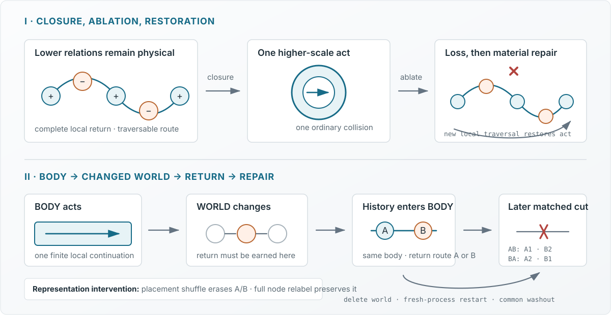

Public abstract · Relational distinguishability / basal cognition
Relational Distinguishability in a Minimal Non-Neural Carrier
An intervention test through history-dependent repair
The biological question and proposed postulate
Work on anatomical homeostasis and basal cognition treats morphogenesis as collective problem-solving in morphospace: tissues can recover large-scale organization after perturbation, while physiological networks retain history not reducible to current anatomy alone [1–4]. Can later repair depend on history retained in the relational organization of the same substrate that conducts repair?
Relational Distinguishability (proposed postulate): “No relation is physically meaningful unless its sides are distinguishable.” Here, two histories count as physically different only if their difference changes later repair, survives relation-preserving address relabeling, and disappears when the relevant relational placement is shuffled. The link to relativity is programmatic, not a derivation: the tested invariance is storage-address relabeling, not a spacetime transformation.

Operational criterion
A relational history must remain distinguishable in future conduct under intervention—not merely classify a trace.
The harness fixes the A/B return opportunity before execution; it does not select a relation online.
- BODY action changes a particular WORLD record.
- Return can emerge only from that changed record.
- The original world is deleted; BODY alone restarts.
- Matched washout and the same new injury follow.
- Relabel must preserve A/B; placement shuffle must erase it.